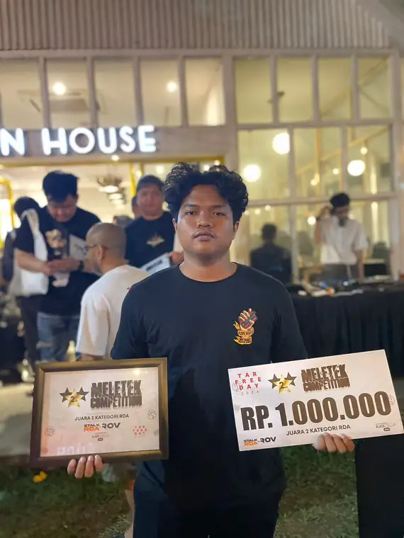

/01
Corporate
Legal.
Peninjauan dan penyusunan perjanjian kerja sama, administrasi kontrak PKWT, serta pengelolaan dokumen dan perizinan hukum perusahaan.
HUKUM OPERASIONAL MANUSIA
Faridh Fikri adalah lulusan Ilmu Hukum dengan pengalaman di Corporate Legal, administrasi HRGA, dan pengelolaan operasional.
Kenali perjalanan sayaPENDEKATAN PROFESIONAL
Ketertarikan saya berada pada titik temu antara ketelitian hukum dan kelancaran operasional perusahaan. Dari peninjauan perjanjian, pengelolaan dokumen kepatuhan, hingga kebutuhan administratif karyawan, saya belajar bahwa pekerjaan yang baik dibangun dari proses yang rapi.
Pengalaman di perusahaan, instansi publik, dan kegiatan sales membentuk cara kerja yang adaptif, komunikatif, dan berorientasi pada penyelesaian tugas.
Unduh curriculum vitaeFOKUS & KOMPETENSI
Peninjauan dan penyusunan perjanjian kerja sama, administrasi kontrak PKWT, serta pengelolaan dokumen dan perizinan hukum perusahaan.
Pendataan karyawan, pembaruan administrasi absensi, penyiapan berkas onboarding, dan penyusunan dokumentasi pendukung HR.
Pengadaan dan pendataan inventaris, koordinasi vendor, pemeliharaan fasilitas, serta komunikasi dan negosiasi B2B/B2C.
Legal drafting · Contract review · Microsoft Word · Excel · PowerPoint
PENGALAMAN & TANGGUNG JAWAB
SEP — DES 2025 01
PT Starlead Technology Indonesia
Menangani kebutuhan Corporate Legal, penyusunan dan pembaruan PKWT, administrasi HR, serta koordinasi kebutuhan General Affairs perusahaan.
DES 2022 — JUL 2026 02
Coil Disco Indonesia
Melaksanakan direct sales dan penjualan melalui e-commerce, distribusi ke toko, menjangkau pelanggan potensial, dan mengembangkan relasi bisnis untuk pembelian berulang.
FEB 2024 03
Pengadilan Agama Jakarta Selatan
Membantu pemeriksaan berkas gugatan, verifikasi dokumen perkara, dan pengarsipan dokumen litigasi secara sistematis.
JAN 2023 04
BNN Kota Tangerang
Mendukung administrasi hukum, persuratan, proses penerbitan SKHPN, serta penyusunan laporan dan narasi publikasi instansi.
PENDIDIKAN
UIN Syarif Hidayatullah Jakarta
Sarjana Ilmu Hukum 2021 — 2025
PELATIHAN & SERTIFIKASI PILIHAN
Daftar disusun berdasarkan CV dan dokumen sertifikasi pendukung.

ARSIP PRIBADI / PENGALAMAN DI LUAR PEKERJAANDI LUAR DOKUMEN & MEJA KERJA
Pengalaman berhadapan langsung dengan pelanggan, membangun relasi, dan terlibat dalam berbagai kegiatan di luar pekerjaan formal memperkaya perspektif saya tentang komunikasi dan tanggung jawab.
“Ketelitian memberi arah. Kemampuan beradaptasi membuat pekerjaan bergerak.”
TERBUKA UNTUK PERCAKAPAN PROFESIONAL
Tangerang, Banten · Indonesia
Download CV